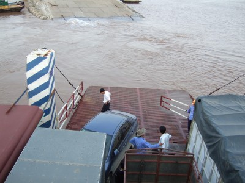
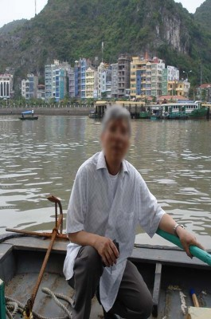

- 6 -

ôm sau, chúng tôi đi Cát Bà. Từ Hải Phòng qua cảng Đình Vũ sang phà đến Cát Hải. Đường cảng Đình Vũ mới làm, thế mà đã đầy ổ trâu, ổ voi, lầy lội như đường Trường Sơn, những ngày chiến tranh. Phà Bến Gót bao giờ cũng nhiều xe, đông khách, chở quá trọng tải, có xe phải đậu ngang trên sàn cầu lên xuống, rất nguy hiểm, một sự cố nào đó xe có thể trôi tuột xuống biển!

Xe và người trên phà Cát Hải đi Cát Bà
Chiếc phà rẽ sóng lướt về phía đảo Cát Bà, sông nước mênh mông, đứng cạnh tôi, Học chỉ tay vào dòng nước xiết, bảo:
-Đây là cửa Nam Triệu mà ngày xưa công an Việt Nam đã kéo thuyền anh chị ra phao số 0.
Tôi lặng người, lòng bâng khuâng khó tả. Mới là cửa biển mà sóng nước đã mênh mông, xa xa một con thuyền đang nhấp nhô theo sóng. Tự nhiên tôi liên tưởng tới chiếc thuyền nhỏ như con thuyền xa xa kia, 31 năm trước, qua cửa sông này. Hôm nay đứng trên phà, nhìn con thuyền cô đơn, lênh đênh trên biển, không thể tưởng tượng ngày ấy chúng tôi “dũng cảm và liều lĩnh” đến thế. Dám đem sinh mạng của mình, của vợ và đàn con thơ lên thuyền, lênh đênh trên biển cả, thách thức Thái dương Thần nữ. Phải chăng ngày ấy, chúng tôi cùng đường! Tập đoàn Lê Duẩn đã ra lệnh bài xích xua đuổi người Hoa chúng tôi, cấm làm việc trong 7 ngành nghề, ai đang làm buộc phải thôi việc, triệt đường sống. Ở lại chắc chết, không chết ngay, cũng chết dần chết mòn. Chỉ còn con đường ra đi. Thế là dắt díu bồng bế nhau lên thuyền, không biết chết là gì. Giá như hôm nay, có ai bảo, trả triệu đô, tôi cũng không dám làm lại cuộc vượt biển như 31 năm cũ. Cứ nghĩ đến cơn giông đêm 18-6-1979 ở biển Bắc Hải, tôi vẫn còn nổi da gà!
Vợ chồng Học biết chúng tôi nhớ cảnh cũ, anh cười:
-Phải cảm ơn Lê Duẩn chứ, nếu không có chuyện bài xích xua đuổi, làm gì có vợ chồng Việt kiều Lâm Hoàng Mạnh về thăm cố hương hôm nay!
Đường vào huyện đảo có 2 đường, đường cũ do Pháp xây dựng và con đường mới hoàn thành gần đây. Đường khá đẹp, quanh co bám theo sườn núi, có đoạn xuyên qua xẻ qua núi. Học bảo, công nhân làm đường xẻ núi bằng tay, chứ không như các nước tư bản bằng các phương tiện hiện đại. Sức người là chính, máy móc là phụ. Du khách phải cám ơn công nhân làm đường, đã đổ bao mồ hôi và cả máu mới có con đường trải nhựa hôm nay.
Chúng tôi dừng xe ở bãi để xe, trước cổng chào huyện đảo, chưa kịp mở cửa, một đoàn tiếp thị nam nữ xúm quanh, gõ cửa kính. Kính hạ xuống, hàng chục bàn tay thò vào, kèm theo danh thiếp, gí vào mặt, với lời chào mời tha thiết. Cầm tất cả card visit, Học bảo:
-Vâng, khi nào cần chúng tôi sẽ gọi.
Xuống xe, họ không buông tha, đi một bước, theo một bước, mời mọc, yêu cầu chúng tôi hứa hẹn. Khó chịu, vợ chồng tôi cố vượt lên trước, hơn 10 người chia 2 tốp, bám theo anh chị Học và bám theo vợ chồng tôi. Sốt ruột, nhà tôi bảo:
-Các anh cũng phải để chúng tôi thở chứ. Vừa đi đường xa đến.
Tưởng họ buông tha, không ngờ họ càng bám:
-Ấy các bác mệt vào hotel của cháu nghỉ, khỏe ngay.
Vừa nói anh thanh niên vừa kéo tay tôi chỉ vào khách sạn ở tít cuối đường đối diện.
-Giá phòng mềm lắm, có 200 ngàn thôi. Các bác vào nhé.
Không cần biết đồng ý hay không, anh ta kéo tay tôi đi.
Ngay lúc ấy, hai anh khác kéo nhà tôi:
-Các bác vào nhà hàng chúng cháu, ngon rẻ lắm.
Người nọ kéo, người kia lôi, chúng tôi như con mồi của đàn cá. Bực mình, nhà tôi bảo:
-Các anh có để chúng tôi yên được không?
Lúc ấy họ mới giãn ra, nhưng đi một bước, theo một bước, kè kè sát bên, rất khó chịu. Học ghé tai tôi nói nhỏ:
-Hôm nay thì thế, mấy hôm nữa, nghỉ lễ 30-4, chả có ma nào ra lôi kéo anh chị đâu. Khách đông như kiến, nhà hàng khách sạn cháy phòng, chẳng có giá 200 ngàn đâu. Chúng chém từ 500 ngàn/phòng trở lên!
Ngày hè, tuy mới 10 giờ sáng, nắng đã gay gắt, vừa đến huyện đảo, đường xa chưa kịp thở, chúng tôi bị nhóm tiếp thị lôi vào nhà nghỉ như thể chúng tôi là những cặp bồ lẩn vợ trốn chồng ra đảo làm tình không bằng!
Du khách nước ngoài đến Việt Nam rất sợ lối tiếp thị dai như đỉa, thô lỗ mất lịch sự như thế này, vì thế đã đi không bao giờ trở lại.
Không chịu nổi, chúng tôi lên xe sang khu vực Con Cò 2. Xe vừa đỗ, hai chiếc xe máy bám sát đuổi theo, cũng đỗ lại ngang thân xe. Nhìn ra, lại hai thanh niên lúc trước kéo tôi vào nhà nghỉ. Ngán ngẩm quá! Để tránh mặt, chúng tôi tìm toilet, hai thanh niên cũng đi theo. Chưa kịp bước vào toilet công cộng, một người đàn ông khoảng 50 tuổi ở đâu xồ ra chắn đường ngay cửa nhà vệ sinh, chìa vé, nói:
-Vé 5000 đồng/người.
Thông thường đi vệ sinh, 1000 đồng/lần, nhưng ở đây cái gì cũng chặt chém. Chả nhẽ mặc cả, nộp 10.000, vợ tôi và chị Liên bước vào, chưa đầy một phút, quay ra ngay, bảo:
-Nhà vệ sinh không có giấy, không có nước. Tôi không thể đi được, ông ta trả lại tiền.
Y đành trả lại, miệng làu bàu nghe không rõ.
Vào hotel Con Cò 2, tôi vờ hỏi thuê phòng, hai bà tranh thủ đi toilet. Khu hotel này kiến trúc theo lối biệt thự Pháp rất đẹp. Chủ nhân, chồng Pháp vợ Việt, về đây đầu tư, giá phòng từ 125 đến 200 Mỹ kim/ngày. Chà, đắt quá! Chả thế không thấy du khách người Việt, toàn dân nước ngoài nằm phơi nắng.
Vừa ra cửa, lại đụng ngay hai thanh niên bám theo, lần này họ trắng trợn hơn:
-Các bác đến hotel chúng cháu nhé, phòng ở đây đắt lắm.
Nguyễn Học đành bảo:
-Ừ, chiều tối sẽ đến. Các anh về đi, chúng tôi bây giờ chưa ngủ đâu mà cần nhà nghỉ.
Xe chạy quanh, thăm hết huyện đảo, trở lại bến cũ tìm nhà hàng. Lại một đoàn tiếp thị nhà hàng, khách sạn đổ xô đến. Nguyễn Học chỉ vào một người đàn ông đứng tuổi trong đám tiếp thị, bảo:
-Thôi được, chúng tôi vào nhà hàng của ông này.
Nhóm người khác sừng sộ, khà khịa, nhưng Nguyễn Học cũng không vừa:
-Ơ hay, vào nhà hàng nào là quyền tôi, các anh các chị bắt bí thế nào được.
Nét mặt rạng rỡ, ông kia dẫn chúng tôi ra cầu tầu, hướng về nhà hàng Trang Nhung đậu ngoài bến, giơ hai tay quơ quơ làm hiệu. Một chiếc xuồng mười mã lực rẽ sóng đón chúng tôi. Trước khi lên ăn, Nguyễn Học và tôi chụp ảnh kỷ niệm, ngồi xổm, tay cầm cần lái, như người đang thuyền vượt biển.
Nhà hàng nổi, mọi thứ giá cao gấp 3 đến 4 lần nhà hàng trên bờ, khách đã lên, không thể từ chối, muốn bỏ đi nơi khác, chỉ một cách duy nhất, nhảy xuống biển bơi vào bờ!
Trong lúc ăn, Nguyễn Học nảy ra chuyện đùa:
-Em gửi ảnh vừa chụp, mail cho cậu Chí, bịa chuyện là anh mua xuồng 10 mã lực, từ Hong Kong về Móng Cái, lên VTV4 tố anh em hải ngoại, rồi được vào Mặt trận Tổ quốc, anh nghĩ cậu Chí có tin không?

Chiếc xuồng 10 mã lực
Chí, con một cố giáo sư danh tiếng Hà Nội, giáo sư Ngụy Như Kông-Tum là bạn thân của Nguyễn Học từ khi hai người còn làm ở Viện Khoa Học Hà Nội, một viện nghiên cứu tầm cỡ của Bắc Việt. Cuối thập niên 1980, Nguyễn Học và Chí. cùng sang Liên Xô tu nghiệp làm master. Liên Xô sụp đổ, Chí ở lại xoay ra buôn bán và chạy được sang Đức, gia đình anh định cư từ đó cho đến nay. Tôi quen Chí mới gần một năm, cũng qua Talawas, trao đổi qua email, chúng tôi tâm đầu ý hợp, chuyện gì vui buồn đều chia sẻ. Cũng do Chí giới thiệu, tôi mới biết Nguyễn Học
Chí thuộc lớp U60, bằng cấp đầy mình, hơn hai mươi năm tỵ nạn xứ người, dày dạn kinh nghiệm, làm sao mà dễ tin, tôi bảo:
-Chí không tin chuyện chú đâu.
-Em viết thật khéo, chắc chắn Chí tin.
-Cứ thử đi, nhưng mình không nghĩ Chí lại nhẹ dạ cả tin đến thế. Một thuyền 10 mã lực, không lương thực, thực phẩm, không nước ngọt, không dầu xăng, không la bàn, chẳng biết khỉ gì về sông nước… mà dám vượt biển Hong Kong chạy về Móng Cái, hơn ngàn cây số, họa có là thánh! Chỉ cần nghĩ kỹ một chút là biết ngay chuyện phịa.
-Em cược, Chí tin sái cổ cho mà xem.
-Mình hiểu, hai cậu thân với nhau từ hồi ở Viện X, cùng sang Nga làm master, Chí tin Học hơn tin mình. Nhưng Chí tóc cũng muối tiêu, tiến sĩ chứ có phải thường đâu, cậu ấy không thể nhẹ dạ cả tin như thế được.
-Anh đồng ý rồi nhá!
-Đồng ý cả hai tay.
Hai hôm sau, Nguyễn Học gặp tôi, cười như phá:
-Em nói rồi mà, Chí tin sái cổ. Lâm Hoàng Mạnh phản thùng!
Chúng tôi cười ngất. Nguyễn Học thêm:
-Nếu nó viết mail hỏi, anh đừng trả lời. Em sẽ tố thêm, vì anh mà công an phường mời em lên làm việc. Chắc nó oán anh!
Tuần sau, gặp tôi, Học vừa cười vừa nói:
-Nhiều người tin lắm. Chiêu của em tuyệt chưa! Nó bảo, viết mail hỏi bạn bè, người ta trả lời, theo dõi VTV4 chả ai thấy mặt L.H.M tố bà con hải ngoại cả. Lại còn hỏi em, thế là thế nào. Cái thằng lạ thật!
Cười chán, Nguyễn Học bảo:
-Thế mới biết các bố trí thức hải ngoại dễ tin thật, kiểu này chọi với công an cộng sản thắng sao nổi.